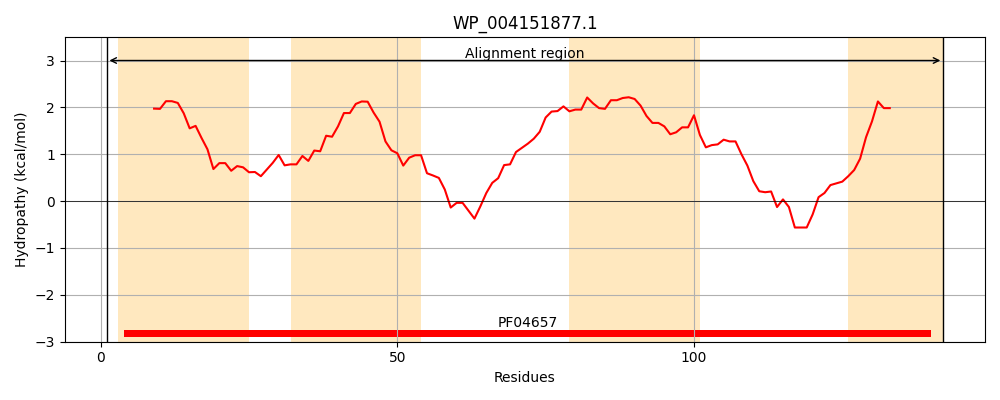
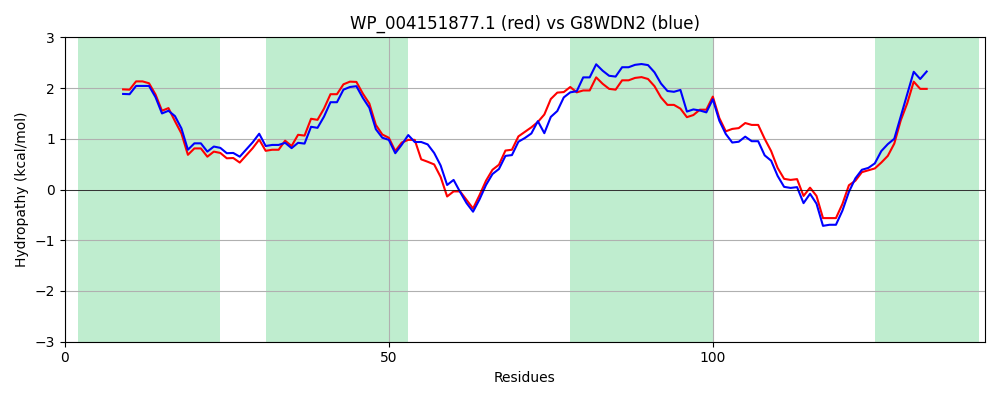

WP_004151877.1
Hit Accession: G8WDN2
Hit TCID: 2.A.7.21.5
Hit Description: gnl|BL_ORD_ID|4878 gnl|TC-DB|G8WDN2|2.A.7.21.5 Uncharacterized protein OS=Klebsiella oxytoca (strain ATCC 8724 / DSM 4798 / JCM 20051 / NBRC 3318 / NRRL B-199 / KCTC 1686) GN=KOX_20230 PE=4 SV=1
Mach Len: 142
e:0.000000
Query TMS Count : 4
Hit TMS Count: 4
TMS-Overlap Score: 4.300000
Predicted Substrates:None
BLAST Alignment:
| Protein Hydropathy Plots: | |
|---|---|
|  |  |
Pairwise Alignment-Hydropathy Plot: | |
|  | |